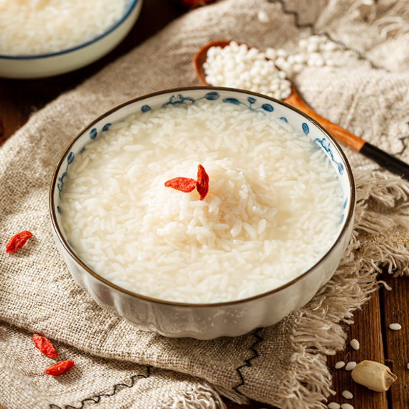

Explore Wuhan specialties:
Hot dry noodles
Hot dry noodles is one of the most famous snacks in Wuhan, which has a variety of methods. It uses alkaline water, and uses cooking oil, sesame paste, salad oil, sesame oil, red oil, chives, garlic, diced radish, sour beans, brine juice, soy sauce, vinegar and other auxiliary materials. Hot dry noodles are yellow, oily and delicious. Due to their high calorie content, they can also be used as a staple food to nourish breakfast and supplement the energy needed by the human body.
Wuchang fish
Wuchang fish has high nutritional value, high protein and low cholesterol. Regular consumption can prevent diseases such as anemia and hypoglycemia. Warm in nature and sweet in taste, it is edible for most people, suitable for all ages. It has the effect of appetizing, invigorating the spleen, and enhancing appetite. Steamed, braised, stewed in oil, or fried in oil are all suitable, with tender and plump meat.
Duck neck
Duck neck is one of the traditional famous foods in Hunan, Hubei, Sichuan, Jiangxi and other regions. Also known as Sauce Duck Neck or Sauce Duck Neck, it originated and spread in the Dongting Lake area of Changde and Yueyang during the Qing Dynasty, and spread from Hunan to Sichuan and Hubei. In recent years, it has become popular throughout the country. Duck neck belongs to the category of sauce foods (mainly duck neck, sauce duck, including sauce duck wings, sauce duck neck, sauce duck crutches, sauce duck feet, sauce duck tongue, sauce beef, sauce plate fish, sauce plate dried seeds, sauce plate lotus root, etc.). Sauce foods are soaked in various spices, and then refined through processes such as air drying and baking. The finished product has a deep red color, and has characteristics such as fragrance, spiciness, sweetness, numbness, saltiness, crispness, and softness. It is an appetizing and wine pairing dish.
Xiaogan rice wine
Xiaogan rice wine is a traditional flavored snack in Xiaogan City, Hubei Province, with a history of thousands of years. It is a local delicacy with exquisite ingredients, unique production methods, and low prices. It is made from high-quality glutinous rice produced in Xiaogan and fermented with honeycomb yeast, which has been passed down in Xiaogan's history. Xiaogan rice wine is as white as jade liquid, with a refreshing fragrance that is sweet and refreshing. It is strong but does not sell, thin but does not flow. After eating, it produces saliva and warms the stomach, with a deep and long-lasting aftertaste.